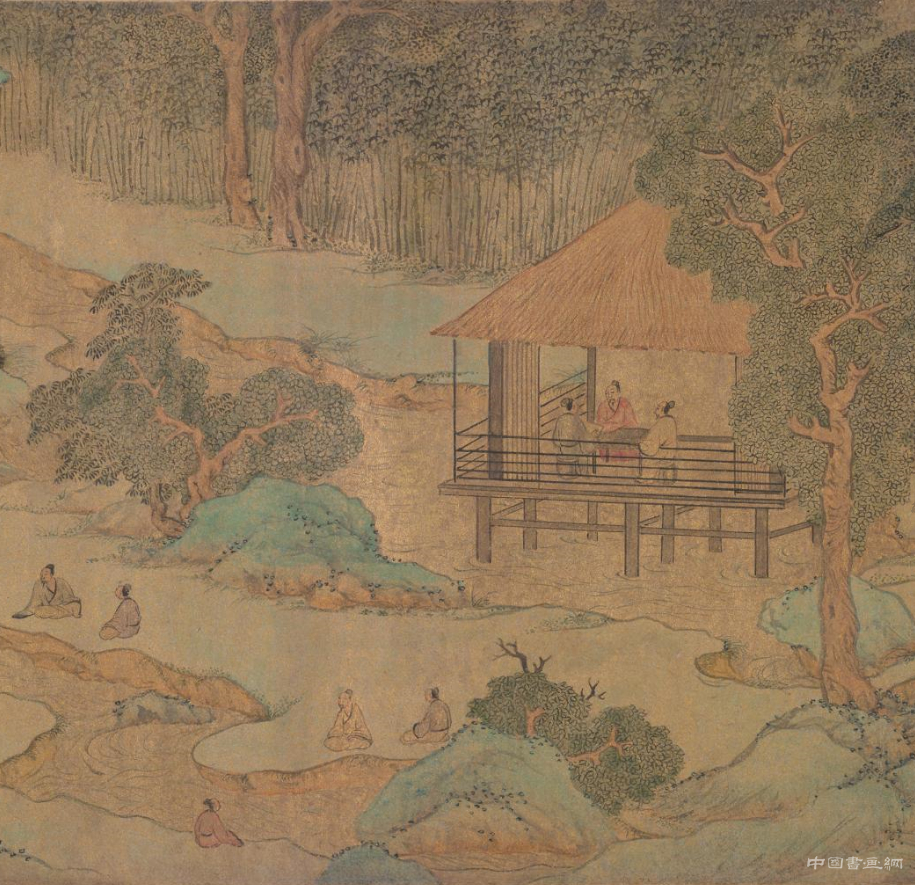

书画艺术
书画是绘画和书法的统称。画，是人们生活中创造的结晶，画的起源久远，有着丰富的意思。“画中有诗，诗中有画”，中国古代，诗与画分不开。画的作品也体现了作者的情感和思想，画中常常包含着艺术家强烈的思想感情，因此艺术也深深地孕育在画中。书，一说是书法，也就是俗话说的所谓的字，另一种观点则认为书是指文化内涵。由此可知，书画是指绘画和书法，也可以理解为具有文化内涵的绘画。

书，即是俗话说的所谓的字，但不是一般人写的字，一般写字，只求正确无讹，在应用上不发生错误即可。倘若图书馆和博物馆把一般人写的字收藏起来，没有这个必要。图书馆和博物馆要保存的是字中的珍品。历史上有名的书法家写的真迹，在写字技巧上有很多创造或独具一格的，我们称之为书法艺术。书法艺术价值很高的，才有资格进入图书馆和博物馆。中国的书法是一种富有民族特色的传统艺术，它伴随着汉字的产生和发展一直延续到今天，经过历代书法名家的熔炼和创新，形成了丰富多彩的宝贵遗产，今天图书馆和博物馆保存它，鉴别它，其目的是使来者更好地继承和发扬这份遗产。
中国的绘画艺术，是中华民族传统艺术中起源 最早的艺术形式之一。比如在西安半坡村出土的彩陶上，就绘有互相追逐的鱼、奔跑跳跃的鹿，不仅形象生动，而且有一定的艺术意境。这说明我们中华民族的先人，远在原始社会就已具有相当高的审美意趣和高超的艺术创作才能。 中国画（宣画）在世界美术领域中自成体系，既有悠久的历史，还有优良的传统。是指用笔、墨、颜色在帛、布、绢、纸、绫等上面画的东西。不是一般人画的，而是历史上有名的画家们画的。有些画虽无名无款，但年代较早，具有艺术性和文物性的，我们也要保存、整理。